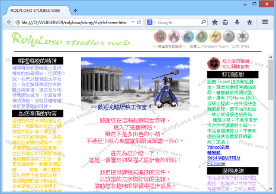
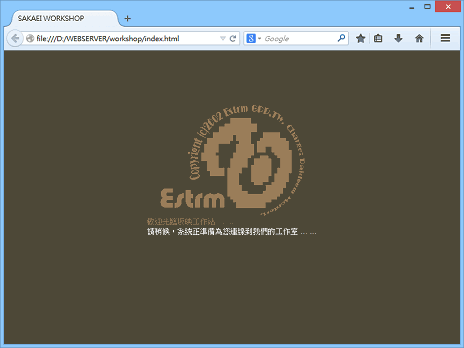
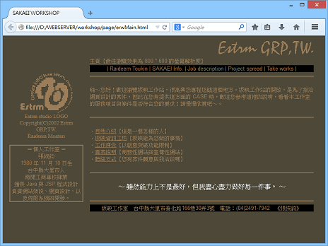
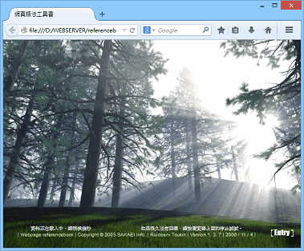
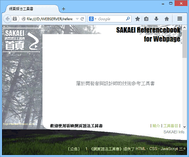
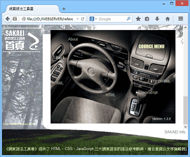
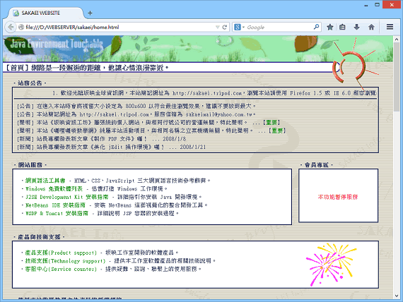
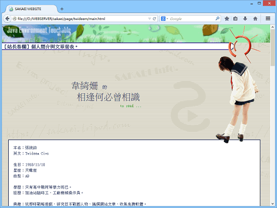
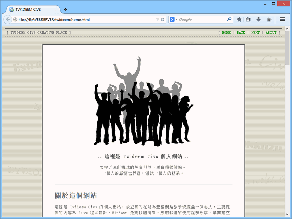
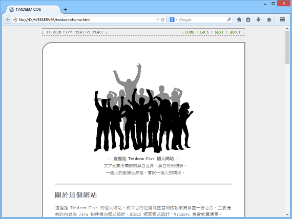

關於這個網站
這裡是 Twideem Civs 的個人網站。
站務摘要
TWIDEEM CIVS CREATIVE PLACE (C)2008-2048 Dpqjxvfwluckyrhinotbz Games. Some Rights Reserved.
http://twideem.github.io
twideem@outlook.com
亞特蘭提斯子星園區函關二街 39 號 6 樓
關於站長
張埠，字統鈞，號八零。中華民國台中縣大里市人。一無是處，乃至一事無成，而能無用之用者。卒於民國一百三十七年，享年六十八歲，著有《統道泛論》一書。
名稱：Twideem Civs
性別：男
生日：民國六十九年農曆十月初三
星座：天蠍
血型：AB
身高：171 公分
血統：客家人（父親苗栗大湖客家人，母親高雄美濃客家人）
興趣：玩即時戰略遊戲、收集免費軟體、編撰網站文章、研究歷史人物、遙想上古文明。
專長：程式設計。
喜好：乾麵、冬天、広島東洋カープ、音樂（森川美穂、CHAGE&ASKA、黃妃、安全地帶、サザンオールスターズ）、影視（周星馳電影、日劇、クレヨンしんちゃん）。
學歷：臺中縣大里鄉塗城國民小學，義務教育，1987～1992。
台中縣立成功國民中學，義務教育，1993～1995。
私立南開工商專科學校，電機工程，1997～2000。
事蹟：數學八連當（通識數學＋工程數學）、兩張退學通知單。
派系：炎帝文化（與黃帝文化對立）、孫文體制（與蔣介石體制對立）、國民黨（與民進黨對等）、反蘋果、反韓國、親日、親中、信仰佛法僧三寶（不全然與佛教對等）。
其他：我英文名字的由來、我的電腦配備史、我的歷史人物排行榜、我的棒球選手排行榜、我的 NBA 排行榜、我幹過的蠢事。
團隊簡介
Dpqjxvfwluckyrhinotbz Games，一個網頁遊戲和 Java 遊戲的工作室。
代表作品有《UFBJP Championship》《未來文明》《32x Monster kill rate》《150KiB/s Monster kill rate: Poetaz》《OMNES VIAE》《Killtime Tetris》。
為了取個不會和別家公司重複的名稱，我想到打亂 26 個英文字母順序，產生一組亂碼來用，於是取了這樣一個遊戲工作室名稱：
網站歷史回顧
1999
專科學校三年級，在奇摩個人網頁建立囉哩囉嗦教學網：

2003
想要接案，成立坂映工作室：


放棄後，改應徵網頁設計師時用的作品：



2005
過去教學網站的內容很冗贅，改版為要點化整理的「坂映全球資訊網」：


2008
拋棄「教學網站」概念，改版為「個人網站」，並採用「文件風格」精簡版型：

2013
遵循 HTML5 規範，並進一步改版為風格更簡陋、走灰色調的個人網站：

2016
注意到語言癌的問題…但積年陋習，修正不過來 XDDD
2020
支援智慧型手機版面配置。